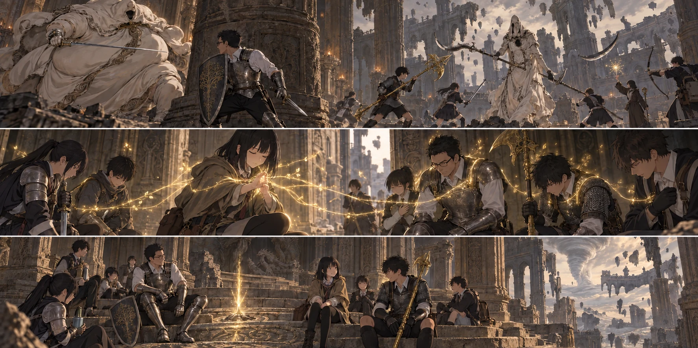

DAY85 / TURN1−95
ふたりを越える、十三人。

先生「見えている一体だけが終わりじゃない。手順を続ける！」
【DAY85｜昨日の続きを、今日にする】目を開けると、竜巻の音はまだ同じ場所から聞こえていた。先生は残った保存食と水を確かめた。今日の分はある。昨日の道を戻らずに、この先へ一日を使える。そのために解放した祝福だった。十三人は瓶と装備を点検し、短い回廊へ入った。
【霧の前】階段の下で、失地騎士が振り向いた。通り過ぎるだけでは、最後尾まで安全に抜けられない位置だった。先生は剣を抜き、陸に横へ回るよう合図する。今日はこの一体を切り離して処理する。後ろの十二人が同じ角へ詰まらないよう、蓮が短剣と小盾を構えたまま順番を伝えた。
【接近｜2d6＝2・4＋4＝10】騎士が先生へ踏み込む。盾の縁で刃を受け流し、先生は斜めへ足を抜いた。その空いた所へ陸の大剣が入る。矢と魔力弾は、二人の間へ撃たず、騎士が横へ逃げる方を塞いだ。倒れた鎧が床を鳴らす。傷ついた者はいない。使った矢と術は戻らないまま、十三人は霧の前へ進んだ。
葵が六人を近くへ呼んだ。先生、直人、大地、健太、陽太、陸。黄金の細い枝がそれぞれの身体へ伸び、離れても淡く残る。祈祷は、葵の足元に留まるための円ではない。「九十秒。その先は切れます」。先生は頷き、大地の誓いを受けた。こちらは三人、四十五秒。二つの光を、勝てる間ずっと続くものと思わずに入った。
【神肌のふたり】白い衣をまとった二つの姿が、広間の向こうで動いた。太い腹と細い刺剣。高く伸びた影と、両端に刃のある武器。同じ白でも、歩幅も、構える高さも違う。細い方が聖印の光へ顔を向けた。布の奥から、擦れた声が洩れる。「黄金の祈りを、ここまで持ち込むか」。先生は返事をせず、貴種の方へ盾を向けた。この黒い炎が危険なことは、先読みと変わらなかった。
【分断｜2d6＝6・3＋4＝13】先生が貴種を柱の左へ誘うと、直人たちは逆へ走った。二体の敵の間に距離ができる。花が使徒へ矢を送り、千夏が先生側の射線を見る。どちらかが倒れるまで完全に別々、ではない。敵が向きを変えたら、向こうの組へ声を渡す。そのために蓮は、剣を振るう回数より、二つの戦いが見える位置を優先した。
黒炎の塊が飛んだ。先生は盾で全部を受けようとせず、柱へ射線を隠す。石の横を熱が流れる。直人の大竜爪が使徒を押し、陸が一撃だけ入れて下がった。大地の黄金の刃が次を受け持つ。後ろにいる悠と拓海も、見えた瞬間に何でも撃つのではなく、味方が離れる合図を待った。
貴種が膨らんだ。先生は昨日書いた丸を思い出すより先に、横へ動いた。「散れ。柱一つに集まるな！」。大きな身体が床を転がり、一本の柱の上部が砕ける。隠れ場所だったものが、音を立てて小さくなった。健太が陽太の盾を軽く叩き、同じ側へ逃げないよう合図した。
【転がりと黒炎｜2d6＝1・6＋4＝11】陽太は、先生の背中を追わなかった。貴種の曲がる方を見て、別の柱の外へ回る。先生は自分へ向く動きを保とうとしながら、いつ失っても声を出せる距離を取った。クララが側方で揺れ、その青い光へ敵の顔が一瞬向く。狙いを永久に固定する仲間ではない。それでも、隊列を作り直す一瞬を分け持ってくれた。
葵は聖印を握ったまま、光が消える時を見ていた。九十秒は、思っていたより短い。先生たちの周りから黄金の枝がほどける。「恵み、切れました」。傷が増えてから気づくのではなく、使い終えた力を声で知らせる。それを聞いて、紬が一歩前へ出る。追加の回復はまだ使わない。必要な時に届く位置を保つ。
使徒が崩れた時、花の弦を引く手が一瞬緩んだ。倒した。そう思った目の前で、もう一方が白い影を呼び戻した。花は息を呑む。「戻るって、本当に……」。知っていたことが起きたのに、心が一拍遅れる。先生がすぐに声を返した。「見えている一体だけが終わりじゃない。手順を続ける！」
【共有された命を断つ｜2d6＝6・4＋4＝14】倒した回数を数えるのをやめ、攻撃が届く機会をつないだ。伸びる使徒の刃を直人が外し、大地のハルバードが衣を裂く。貴種が先生を追う間に陸が側面へ入り、振り切ったらすぐに退く。盾を持つ二人が後ろを守り、矢が空いた射線を通る。十三人でいる意味が、同じ場所へ集まることではないと、花にははっきり見えた。
最後の白い影が薄れた後も、先生は剣を下げなかった。再び戻るのを待った。黒炎は上がらない。もう一度、床の端から端まで見た。それからようやく「終わった」と言った。誰かが笑い、誰かが大きく息を吐く。葵は使わずに残った一回分を確かめた。準備した祈りを全部使い切らずに済んだことが、今日は嬉しかった。
【勝利のあと】新たな負傷も、死亡もない。接近と三つの局面を通して、赤瓶を使った者もいなかった。だからといって、何も怖くなかった者はいない。先生は割れた柱のそばで皆の返事を聞き、葵にも礼を言った。彼女の術がある間も、なくなった後も、皆が自分の役目を知っていた。
戦利品は、鍛石掘りの鈴玉【4】と戦灰「黒炎の渦」。どちらも得た瞬間に武器が強くなるものではない。鈴玉を渡し、素材を買い、鍛える。戦灰なら対応する武器へ装着して、使う力も見積もる。先生は荷物へしまい、まだ増えていない強化値を、次の作戦へ書き込まなかった。
【竜の聖堂、祭壇】十三人で戦後の祝福を解放し、休息した。主力がここまで来た道は、もう登録済みの線になった。教会へ戻って補給しても、次はこの場所から再開できる。携行していた三日分の食事は今日で尽きた。さらに進む前に、まず食料と水を受け取る。残り時間のためにも、必要な準備を飛ばすわけにはいかなかった。
教会では、翼たちが今日も三頭分の食料を持ち帰った。調達の目は三と六、補正込みで十三。遠征隊が使い切った保存食の代わりは、こちらで用意されている。全体の食料は百十九食分、すべて教会側にある。財布は一万八千八十八ルーン。先生は次の頁に、再配分と補給を先に書いた。
【DAY85｜夕】残りの行動日は十四。次はファルムのさらに奥、マリケスへ続く道だ。八十九日目に帰還し、九十日目の赤月を全員で越える予定は変えない。帰還前の四日でどこまで進めるか、予備の日をどれだけ残せるか。まだ通常ルートを狙える。先生は勝利の数を眺める代わりに、次に必要な一日を数えた。
今回の判定記録
| 判定 | 出目 | 補正 | 合計 |
|---|
| approach | 2+4 | 4 | 10 |
| separate | 6+3 | 4 | 13 |
| rolling | 1+6 | 4 | 11 |
| sharedLife | 6+4 | 4 | 14 |
| base | 3+6 | 4 | 13 |
抽選前の条件 · 抽選結果